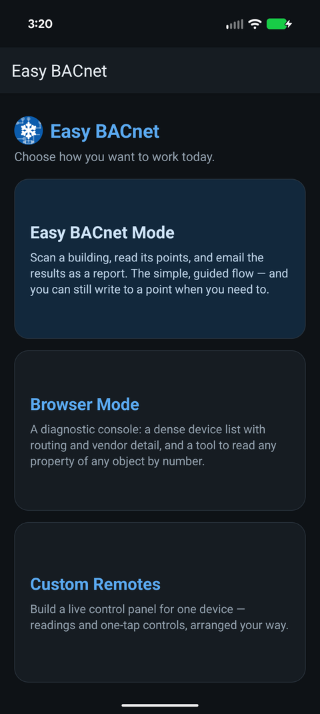

How do I get a BACnet IP points list off a building?
Updated 21 September 2026
Connect your phone to the same network as the building controls, open the app and tap the Easy BACnet card, tap Scan for Devices, wait for the scan to finish, then tap Export Results. The app reads every point on every device it found and hands you an email with a CSV attached. Tap View Results instead if you want to look at the devices and points on the phone first.



Before you start
- Be on the same network as the controls. Join the building's Wi-Fi, or plug the phone into the controls network with a USB-Ethernet adapter. A phone on guest Wi-Fi or on mobile data will find nothing, and that is the network's doing, not the app's. See why can't I find my BACnet devices? if the scan comes back empty.
- You do not need anyone's password. BACnet has no login. If you are on the network, the devices will answer.
Step 1 — Open Easy BACnet
The app opens on a choice of three cards: Easy BACnet (the simple flow this guide covers), Browser Mode (a diagnostic console), and Custom Remotes. Tap Easy BACnet.
Step 2 — Scan
Tap Scan for Devices. The app broadcasts a BACnet Who-Is and listens for replies. It keeps re-broadcasting for up to about forty-five seconds, because Wi-Fi access points drop broadcast packets routinely and one shot is not reliable. A counter shows how many devices have answered so far; let it run to the end.
When it finishes you get a green banner — Success! Found 6 device(s) — or a red one, No devices found. On success two buttons appear: View Results and Export Results. If it comes back red, see the app can't find what I'm looking for.
If the summary warns about unconfigured devices or duplicate Device IDs, that is worth telling whoever looks after the system. Both are commissioning mistakes that will cause trouble for any integrator later. See BACnet Device IDs explained.
Step 3 — Look at what it found (optional)
Tap View Results. Each device shows its name, Device ID and IP address. Tap a device and the app reads its full object list — on a big controller this can take a minute, because it asks for the points one at a time on purpose, which is the only way that works with every controller ever made.
Tap a point to see its Present Value, Units, Status and Description, with a Refresh button for a fresh read. On points that can be commanded you also see Commanded At and Falls Back To — whether something is currently overriding the point, and at what priority. That one screen answers "why is this damper stuck open" more often than anything else in the app.
Step 4 — Export
Tap Export Results (from the home screen after a scan). On the free version this plays one short video ad first — and if no ad can load, the export just goes ahead anyway, so you are never stuck. (The one-time unlock removes the ad.) The app then reads every point on every device: names, present values, units and status. A progress box shows which device it is on. Do not walk out of Wi-Fi range while it runs.
When it finishes, your email app opens with a message and a CSV attached. You choose who it goes to. The app never sends anything itself and has no idea who your integrator is.
The CSV columns are: Device ID, Device Name, Device IP, Object Type, Object Number, Point Name, Present Value, Units, Status. That is exactly what someone asking for a points list needs — see a vendor asked for my BACnet information.
Things worth knowing
- Nothing is uploaded anywhere. The app has no account and no server. The CSV exists on your phone and in the email you send.
- Scanning and reading cannot change anything on the equipment. Writing is a separate, deliberately awkward mode — see how to write to a BACnet point.
- Dark screen by default. The app opens dark whatever your phone is set to, because plant rooms are dark. Change it under Appearance in the menu if you are working in sunlight.
- Devices on another subnet will not appear unless there is a BACnet router or BBMD forwarding to your segment. That is how BACnet works everywhere, not a limitation of this app in particular.